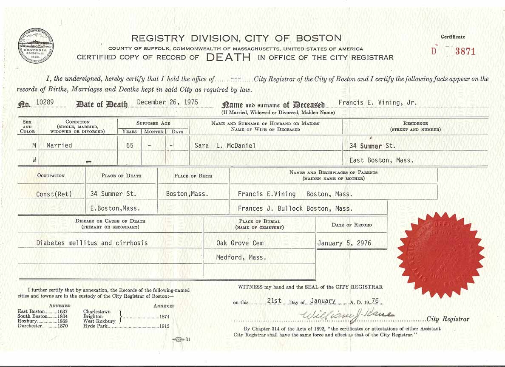

Census Data
| 1940 | |
| Francis Earl Vining Jr. | 29 |
| Sara Lee (McDaniel) Vining | 30 |
| Francis Earl Vining III | |
| Linda Lee Vining |

Death Data
Certified copy of the record of death of Francis Earl Vining Jr. Note the typographical error ("January 5, 2976") under "Date of Record".